![Shinkai Masayo - Contract Trigger (Lasse) [Revelation]](./模拟图池（高阶）.covers/7-4625968.jpg)
![Rabbit House - Divine Ordeal (Garden) [Garden & yf's Ultimate Trial]](./模拟图池（高阶）.covers/20-3754619.jpg)
| # | BID | Beatmap Info | Mods | BPM | Hit Length | Max Combo | CS | AR | OD | Notes |
|---|---|---|---|---|---|---|---|---|---|---|
| 1 | 3923537 | NM | 180.0 | 4:25 | 1588 | 3.7 | 9.2 | 9.3 | 综合 | |
| 2 | 2105741 | NM | 170.0 | 3:15 | 2153 | 4.0 | 9.4 | 8.4 | 耐力串 | |
| 3 | 4444291 | 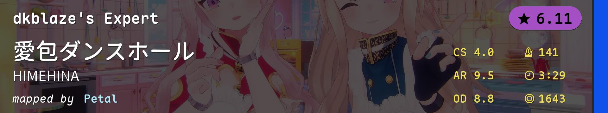 | NM | 141.0 | 3:29 | 1643 | 4.0 | 9.5 | 8.8 | alt |
| 4 | 3226349 | 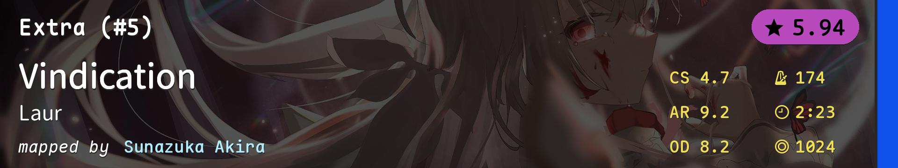 | NM | 174.0 | 2:23 | 1024 | 4.7 | 9.2 | 8.2 | tech |
| 5 | 3651733 | 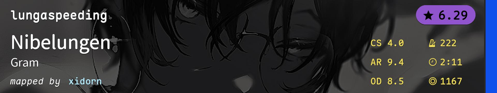 | NM | 222.0 | 2:11 | 1167 | 4.0 | 9.4 | 8.5 | 高速 |
| 6 | 4111783 | 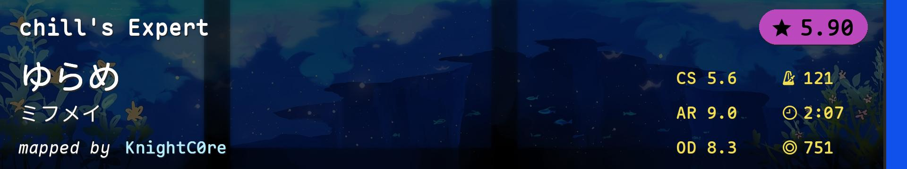 | NM | 121.0 | 2:07 | 751 | 5.6 | 9.0 | 8.3 | 啥玩意？ |
| 7 | 4625968 | |
HD | 199.0 | 3:18 | 1446 | 4.0 | 9.3 | 9.0 | Lasse又来HD1啦 |
| 8 | 3376899 | 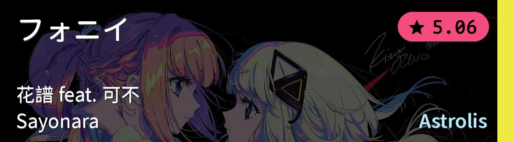 | HD | 170.0 | 2:55 | 932 | 4.0 | 8.0 | 8.0 | AR8 节奏与读图 |
| 9 | 3698760 | 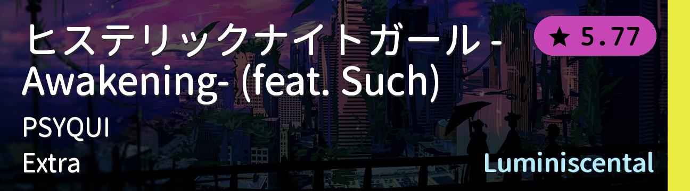 | HD | 160.0 | 2:58 | 1374 | 4.0 | 9.3 | 8.0 | 问就是闪灯推的歌太好听了 |
| 10 | 3905821 | 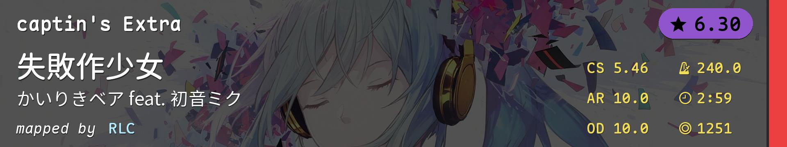 | HR | 240.0 | 2:59 | 1251 | 5.46 | 10.0 | 10.0 | Miku又来HR1啦 |
| 11 | 3037074 | 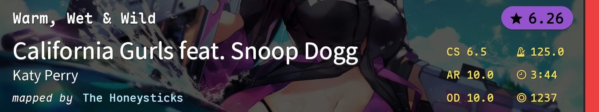 | HR | 125.0 | 3:44 | 1237 | 6.5 | 10.0 | 10.0 | 小圈 |
| 12 | 4510406 | 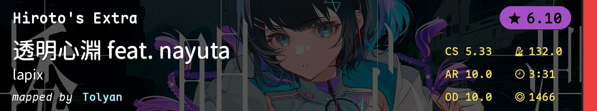 | HR | 132.0 | 3:31 | 1466 | 5.33 | 10.0 | 10.0 | aim/手控 |
| 13 | 4190978 | 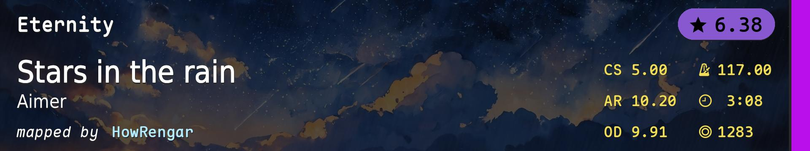 | DT | 117.0 | 3:08 | 1283 | 5.0 | 10.2 | 9.91 | 偷偷在DT1塞一个aim应该没人发现吧 |
| 14 | 125838 | DT | 210.0 | 1:09 | 656 | 4.0 | 9.67 | 9.11 | DT flow | |
| 15 | 4257851 | 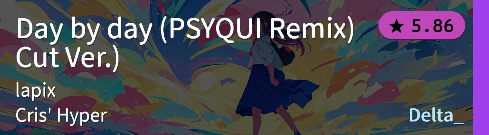 | DT | 255.0 | 1:16 | 778 | 4.5 | 9.67 | 9.11 | 切不死你 |
| 16 | 2800663 | 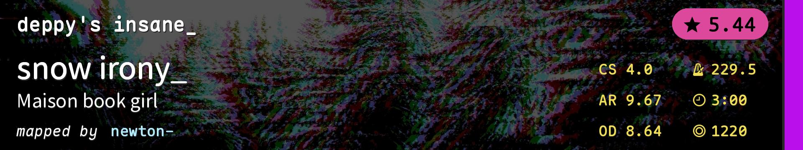 | DT(speed_change=1.35); DA(approach_rate=8.5) | 229.5 | 3:00 | 1220 | 4.0 | 9.67 | 8.64 | DT gimmick |
| 17 | 990862 | 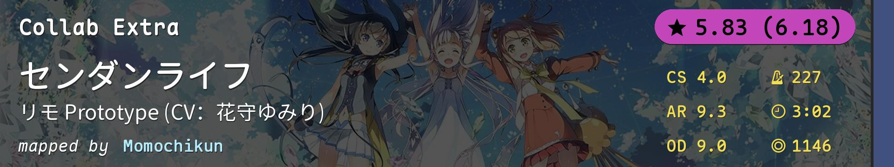 | FM | 227.0 | 3:02 | 1146 | 4.0 | 9.3 | 9.0 | 听说现在FM1流行高速 |
| 18 | 3604159 | 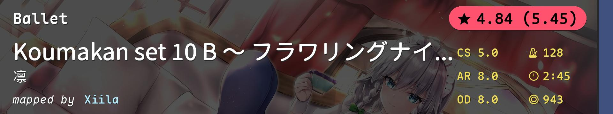 | FM | 128.0 | 2:45 | 943 | 5.0 | 8.0 | 8.0 | antimod |
| 19 | 1964551 | FM | 160.0 | 2:58 | 1263 | 3.7 | 9.4 | 8.7 | 终于能塞进这张好玩的图了 | |
| 20 | 3754619 | |
TB | 180.0 | 5:01 | 2622 | 4.2 | 9.5 | 9.0 | 搞点真题玩玩（Corsace Open 2022 RO32） |